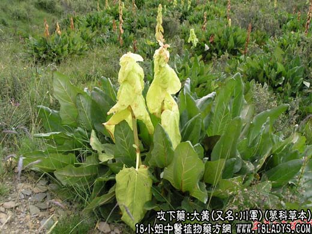

【中药概述】
大黄（又名川军）为蓼科草本植物掌叶大黄的根。苦、寒。归脾、胃、大肠、肝、心经。
1．泻下攻积：用于胃肠实热积滞，大便秘结，腹胀腹痛等，如（伤寒论<大承气汤>）、<小承气汤>、（千金方<温脾汤>）、（伤寒六书<黄龙汤>）。
2．泻火解毒：用于火热炽盛，迫血妄行的吐衄等，如<泻心汤>、（金匮要略<大黄牡丹皮汤>）。
3．活血祛瘀：用于多种瘀滞证等，如<复元活血汤>。
4．清泄湿热：能导湿热从大便而出。主要用于黄疸、淋证等，如<茵陈蒿汤>、<八正散>。
【药效鉴别】
本品沉降下行，走而不守，能荡涤肠胃实热积滞，清泻血分瘀热。借其入血降泄之力，又有活血逐瘀之功。故为攻积、泻火、解毒、逐瘀的要药。
【临证应用】
1.急性黄疸型肝炎：用生大黄50g，水煎服，日1次。小儿轻量；
2.口腔溃疡，属心脾积热型，口渴口臭，便秘。大黄 芒硝 甘草10g 葛根15g，水煎服。
【药理作用】
1.大黄蒽醌有泻下作用，但此成分受热分解而失去泻下作用，因此不宜煎煮时间过长；
2.有增加血小板，促进血液凝固作用；
3.有促进胆汁分泌而有利胆、排石作用；
4.长时间服用
大黄可引起便秘，其机理与所含鞣质有关；5.有抑菌作用。
【化学成分】
含蒽醌衍生物：大黄酸、大黄素、芦荟大黄素、大黄酚等。
【用量用法】
3——12g，水煎服，或泡水服。外用适量。
【使用注意】
易伤正气，若非实证，不宜妄用。经期及哺乳期不宜。
【注】
其推陈出新，有锐不可挡之势，古人誉为“将军”，故名。西大黄系青海所产的西宁大黄，表面呈黄棕色，可见菱形的网状纹理，故称“锦文”。奉为道地药材。
制川军：用于泻下力较缓，活血作用较好，多用于血瘀证及不宜峻下者。
酒大黄：苦微辛，性寒稍平和。缓和泻下作用，引药上行，用于实热燥结，但可清上焦实热。